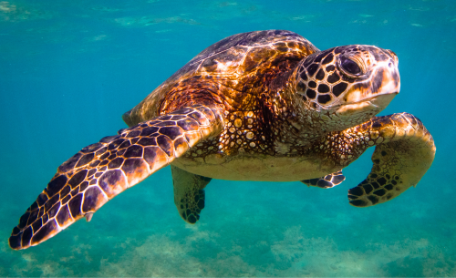
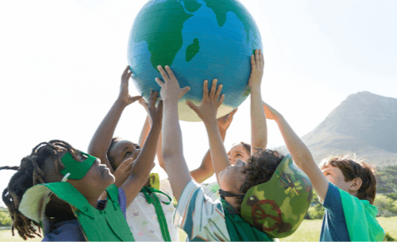
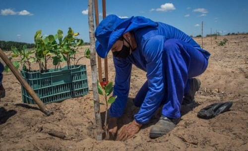
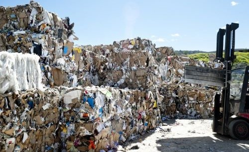

Conservação da Biodiversidade: Envolve atividades voltadas para a proteção e preservação de espécies ameaçadas habitats naturais e ecossistemas diversos.Educação Ambiental: Inclui programas educacionais destinados a conscientizar e informar a comunidade sobre questões ambientais, promovendo a sustentabilidadee a adoção de práticas mais eco-friendly.
Reflorestamento e Restauração Ambiental: Engloba iniciativas de plantio deárvores, recuperação de áreas degradadas e promoção da reflorestação comoforma de combater as mudanças climáticas e restaurar ecossistemas.Gestão de Resíduos: Consiste em ações para reduzir, reutilizar e reciclar resíduossólidos, além de promover práticas de descarte responsável e conscientização sobre a importância da gestão adequada dos resíduos para a saúde do planeta.